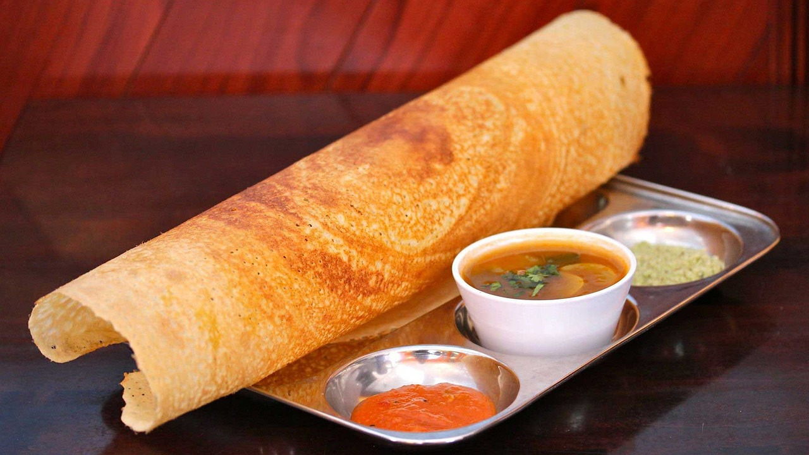

South Indian Spice Odyssey: Exploring the Delectable Delights of Traditional Cuisine!
Dosa

Few foods in South Indian cuisine can match the appeal and adaptability of dosa. Millions of people all over the world have fallen in love with this delicious, savory crepe, which has become a key component of South Indian cuisine. Let's take a tasty trip to learn about the history, variations, and allure of dosa.
A Brief History
The origins of dosa may be traced back centuries in South India, specifically in the states of Kerala, Tamil Nadu, Karnataka, and Andhra Pradesh. Though its precise beginnings are lost to the passage of time, popular belief holds that the famous meal dosa originated from a traditional rice and lentil batter preparation called "dose" or "dosai." Dosa was once just a basic meal, but it has since developed into a masterpiece of cuisine that is adored by people all over the world who enjoy good food.
The Art of Making Dosa
The fundamental component of a dosa is a fermented batter comprised of black gram (urad dal) and rice. Light and fluffy, with a hint of tanginess, the batter is made by soaking the ingredients, grinding them into a smooth paste, and letting them ferment for an entire night. Dosa is easier to digest and has a better flavor because to the fermentation process.
In order to make dosa, a ladleful of batter is thrown onto a heated tava or griddle and swirled to form a thin, circular shape. After cooking until the edges are crispy and golden brown, the dosa is folded or rolled and served. The finished product is an incredibly delicious thin, crispy crepe with a delicate texture and a hint of sourness.
Varieties of Dosa
Dosa's amazing adaptability is one of its most alluring features. A dosa to suit every taste and desire can be found, ranging from traditional versions to creative variants. To whet your appetite, try these well-liked varieties:
- Masala Dosa: A perennial favorite, masala dosa has a crispy golden outside covering a tasty potato inside seasoned with onions, curry leaves, mustard seeds, and other seasonings. It's difficult to resist this delectable dish when it's served with coconut chutney and tart sambar.
- Rava dosa: Known for its lacy, crispy texture and enticing crunch, rava dosa is made from a batter consisting of semolina (rava), rice flour, and all-purpose flour. For extra taste, onions, green chilies, and cumin seeds are frequently added.
- Mysore Masala Dosa: Originating in the Karnataka city of Mysore, this masala dosa variation is characterized by a hot red chutney poured on the inside of the dosa before the potato filling is added. The end product is a spicy, flavorful dosa that will definitely stick in your memory.
- Set dosa: A favorite South Indian breakfast dish, set dosa is spongy, soft, and slightly thicker than its crispy cousins. It is usually served with a mixture of chutneys and sambar and in a set of two or three dosas.
- Paper Dosa: As the name suggests, paper dosa is an extremely thin, delicate crepe that is nearly translucent and paper-thin. It's a demonstration of the dosa maker's expertise and is frequently served as a side dish for hearty chutneys and gravies.
- Paneer Dosa: A delicious blend of tastes from North and South India, paneer dosa is filled with crumbled paneer, or Indian cottage cheese, spiced with onions and cilantro. For lovers of cheese, this version is rich and fulfilling.
Savoring the Flavors of Dosa
Enjoying the flavors of dosa is a must-do for any food traveler to South India. Dosa's crispy texture, tangy flavor, and unlimited variation excite the senses whether it is had for breakfast, lunch, or dinner. Dosa is a staple of the region, appearing in everything from fancy restaurants to modest street food stands, and it always brings people together to enjoy delicious food and wonderful companionship.
Thus, make sure to indulge your taste buds with the enchantment of dosa the next time you're in South India. One thing is for sure: your gastronomic trip will be nothing short of spectacular, regardless of whether you choose to try a novel variety or a classic masala dosa.
Savor the classic allure of dosa while discovering the vivid tastes of southern India, one mouthwatering bite at a time.
Idli

If you take a gastronomic tour of South India, you will undoubtedly come across idli, one of the region's most treasured delicacies. Millions of people love and savor this simple yet delicious dish because it entices the senses with a mouthwatering combination of flavors, textures, and scents. Join us as we examine the history, preparation, and allure of idli, piecing together its intricate tapestry.
A Brief History
The origins of idli can be found in the southern parts of India, where it has been a traditional dish for countless years. Thought to have originated in modern-day Tamil Nadu, idli has since spread across South India and beyond, where it is adored for its healthful, adaptable, and straightforward taste.
The Art of Making Idli
Idli is essentially a steamed rice cake prepared from a mixture of lentils and fermented rice. The preparation of the batter, which usually comprises of a mixture of split black gram (urad dal) and parboiled rice, is when the magic starts. Light and fluffy, with a hint of tanginess, the batter is made by soaking the ingredients, grinding them into a smooth paste, and letting them ferment for an entire night.
Idli is made by pouring the batter into specialized molds called idli plates, then steam-cooking it till cooked through and fluffy. The outcome is a delicate rice cake that is pillow-soft and somewhat sour, and it goes well with a wide range of dishes.
Varieties of Idli
There are many varieties and regional specialties to try, even if the traditional idli is still a perennial favorite. To whet your appetite, try these well-liked varieties:
- Rava Idli: This quick and simple substitute for rice that doesn't require fermentation is made with semolina, or rava. Usually seasoned with curry leaves, mustard seeds, and chopped veggies, it has a somewhat firmer texture and distinct flavor.
- Kanchipuram Idli: Called after the Tamil Nadu town of Kanchipuram, this speciality idli is flavored with a blend of spicy spices including ginger, cumin seeds, and peppercorns. It's a treasured component of South Indian culinary heritage, traditionally offered during religious events and festivals.
- Podi Idli: This tasty take on idlis consists of coating steamed idlis with a fragrant blend of spiced powder (podis), which is produced from lentils, spices, and dried chilies. As a result, the idlis have a crunchy outside and an added flavor boost, which makes them ideal for light meals or snacks.
- Mini Idli: These little idlis are little replicas of the traditional idli, usually served in a bowl or plate with a generous helping of steaming sambar or coconut chutney. They're the ideal size for sharing and enjoying as a quick and filling snack because of their modest size.
Savoring the Flavors of Idli
Idli's delicate texture, subtle flavor, and unlimited variety enchant the senses whether it's eaten for breakfast, lunch, or dinner. Idli is a common dish in South India, where it can be found anywhere from crowded street food stalls to family-run restaurants and fancy dining establishments. It brings people together to enjoy delicious food and wonderful companionship.
Savoring the delicious idli is a must-do experience for tourists visiting South India. Taste the classic or try some creative takes, and you can be sure that the gastronomic adventure will leave you with many great memories.
Idli is the epitome of South Indian food, with its delicate texture and subdued flavors. This meal, which has gained immense appeal despite its modest beginnings, is a testament to the rich culinary legacy of the area.
Seize the chance to experience the enchantment of idli when you're in South India. You can have it for breakfast, lunch, or dinner, and every bite gives you a flavor of authenticity and heritage. Idli exemplifies the richness and diversity of South Indian cuisine, whether one chooses to savor the traditional version or experiment with inventive modifications.
Therefore, make sure to engage on a culinary trip that includes the ageless charm of idli while you travel across the landscapes of South India. Savor the bright flavors and rich culture that characterize this alluring region with every bite.
Savor the gastronomic splendors of Southern India, morsel by morsel of idli.
Vada

Within the diverse range of South Indian cuisine, vada is a particularly appetizing dish that has captured the tastes and emotions of foodies across the globe. Vada is the epitome of South Indian culinary expertise, from its crispy outside to its soft and tasty inside. Come along on a taste adventure as we explore the history, preparation, and allure of vada.
A Brief History
Vada has a long history in South Indian cooking that dates back many years to antiquity. Though it is thought to have started in modern-day Tamil Nadu, vada has since grown to be an essential component of the cuisine of the area. This modest snack has developed over time from a basic meal that locals enjoyed to a well-liked delicacy that is appreciated all over the world.
The Art of Making Vada
Fundamentally, vada is a savory fritter composed of ground, soaked lentils, usually split black gram, called urad dal. Curry leaves, cumin seeds, and black pepper are added to a thick, paste-like batter made from coarsely mashed lentils. After that, the batter is formed into little rounds or discs and deep-fried until the outside is crispy and golden brown and the center is still soft and fluffy.
Achieving the correct combination of texture and flavor—a crispy outside giving way to a light and airy interior overflowing with aromatic spices—is the key to making the perfect vada. Vada is traditionally served hot and fresh, and to enhance its flavor and elevate the culinary experience, it is sometimes served with coconut chutney, sour sambar, or spicy tomato chutney.
Varieties of Vada
Though there are many regional variations and inventive tweaks to try, the traditional vada is still a perennial favorite. To whet your appetite, try these well-liked varieties:
- Medu Vada: Perhaps the most well-known vada variety is Medu Vada, also called Uddina Vada in Karnataka. Medu Vada is a donut-shaped dish that is deep-fried until golden brown and crispy. It is made from a batter of urad dal that has been seasoned with spices and herbs. In South India, it is a breakfast staple that is typically eaten with sambar and coconut chutney.
- Masala Vada: A tasty take on the traditional vada, masala vada consists of a mixture of onions, green chilies, cilantro, and curry leaves along with finely ground lentils. The mixture is formed into patties then perfectly deep-fried to produce golden-brown fritters that are crunchy and slightly spicy. In South India, masala vada is a common snack found at roadside restaurants and tea booths.
- Rava Vada: This crunchy and crispy version is cooked with semolina, or rava, rather than lentils. Rava, rice flour, yogurt, and spices are combined to make the batter, which is then formed into small circles and deep-fried till golden brown. Rava Vada is a simple and quick food that goes well as an appetizer during social occasions or with afternoon tea.
- Thayir Vada: Also referred to as Dahi Vada, Thayir Vada is a flavorful and decadent take on the dish, consisting of deep-fried vadas dipped in seasoned yogurt and garnished with both sweet and spicy chutneys. The pleasant contrast of textures and flavors is created by the mix of crispy vadas, creamy yogurt, and the flavorful burst from the chutneys. Thayir Vada is frequently offered as a festive dessert during festivities and special events.
Savoring the Flavors of Vada
A trip across South India's cuisine wouldn't be complete without sampling vada's flavors. With its delightful aroma, crunchy texture, and robust flavors, vada entices the senses whether it is eaten as a celebratory treat, a hearty breakfast dish, or a crispy snack. In the region, vada is a common sight, from busy street food stands to family-run restaurants and posh dining establishments, uniting people to enjoy delicious cuisine and delightful companionship.
So make sure to indulge your taste buds with the wonder of vada the next time you're in South India. Eating the traditional version or experimenting with creative twists, one thing is certain: your gastronomic adventure will be nothing short of remarkable.
Savor the savory pleasures of vada and discover the vivid flavors of South India, one mouthwatering bite at a time.
Biryani

If you take a gastronomic tour of South India, you will undoubtedly come across biryani, one of the region's most treasured dishes. This flavorful rice dish has been tantalizing palates for generations, combining juicy meats and aromatic spices to create a culinary masterpiece that cuts over national boundaries. Come explore the history, cooking techniques, and seductive appeal of biryani.
A Brief History
The history of biryani begins in the regal kitchens of ancient India, when it was considered a magnificent dish befitting kings and nobility. The dish is thought to have started in the northern Indian Mughal courts before moving south and changing regionally to accommodate local ingredients and tastes. Today, biryani serves as a symbol of South India's rich cultural variety and culinary legacy.
The Art of Making Biryani
Essentially, biryani is a rice dish that is stacked and flavored with soft meat, aromatic spices, and fragrant herbs. To add depth and flavor to every bite, the preparation starts with the meat (usually chicken, mutton, or shellfish) being marinated in a mixture of yogurt and spices. Meanwhile, whole spices like cardamom, cloves, and cinnamon are added to parboiled long-grain basmati rice.
The secret to making biryani is in how it's put together: layers of rice and marinated meat alternately stacked in a heavy-bottomed pot called a handi, covered tightly with a lid, and cooked slowly over a low heat called a dum. The combination of flavors produced by this slow cooking technique makes for a dish that is flavorful, fragrant, and full of subtleties.
Varieties of Biryani
The remarkable variety of biryani, which is a staple meal in every location and group, is one of its most alluring features. To whet your appetite, try these well-liked varieties:
- Hyderabadi Biryani: This version of the meal, which originated in Hyderabad, Telangana, is arguably the most well-known. Layers of marinated meat and aromatic basmati rice flavored with saffron, mint, and fried onions make up this biryani, which is well-known for its robust flavors and aromatic spices. For a full taste experience, it's usually served with raita and mirchi ka salan, or spicy chili gravy.
- Chettinad Biryani: This dish, which comes from Tamil Nadu's Chettinad district, is well-known for its strong tastes and intense heat. The flavor of the biryani is imparted to the meat through marinating it in a mixture of spices, including star anise, black pepper, and fennel. It's frequently served with a side of spicy gravy or coconut chutney and topped with fresh coriander.
- Malabar Biryani: Originating on Kerala's Malabar coast, Malabar Biryani is renowned for its delicate sweetness and aromatic scent. Layers of tender beef and rice are seasoned with a mixture of spices, including cinnamon, cardamom, and cloves, as well as coconut milk, cashews, and raisins. The end product is a thick, creamy, and incredibly tasty biryani.
- Thalassery Biryani: This is a dish from Kerala that is characterized by the usage of kaima rice, a small-grain rice, caramelized onions, fried cashews, and raisins. The rice is cooked in layers while the meat is marinated in a mixture of spices, producing a fragrant, savory, and distinctively Keralan biryani.
Savoring the Flavors of Biryani
A trip to South India's cuisine wouldn't be complete without tasting biryani. Biryani entices the senses with its enticing aroma, brilliant colors, and superb flavors—whether it is consumed in a posh restaurant, a family-run restaurant, or a busy street-side café. The delight of delicious food and wonderful company is shared by people over biryani, which can be found anywhere from the bustling cooks of Chettinad to the aromatic spice shops of Hyderabad.
Thus, make sure to indulge your taste buds with the enchantment of biryani the next time you find yourself in South India. You can be sure that your gastronomic adventure will be nothing short of exceptional, whether you want to try the famous Hyderabadi rendition or venture off the main path to find a hidden gem.
Savor the classic charm of biryani and discover the vivid tastes of southern India, one mouthwatering morsel at a time.